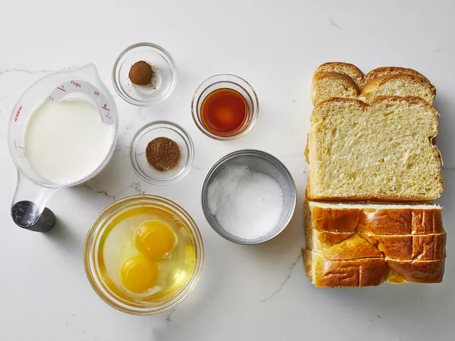

A delicious, protein-boosted morning classic! Thick artisan slices soaked in a rich vanilla-cinnamon egg custard, cooked to golden perfection with a crispy edge and melt-in-your-mouth center.

In a wide shallow bowl, whisk together whole eggs, fresh milk, vanilla extract, ground cinnamon, and a pinch of salt until completely smooth and velvety.
Place thick-cut brioche or white bread slices into the egg mixture for 20–30 seconds per side, allowing the custard to absorb deeply without becoming overly soggy.
Melt 1 tsp of butter over medium heat in a non-stick skillet. Cook soaked slices for 2–3 minutes per side until golden brown and crispy around the edges.
Stack warm French toast slices and top with fresh berries, a drizzle of pure maple syrup or honey, and an optional dusting of cinnamon.